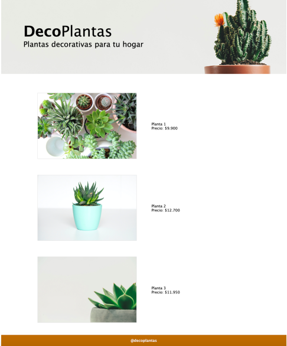
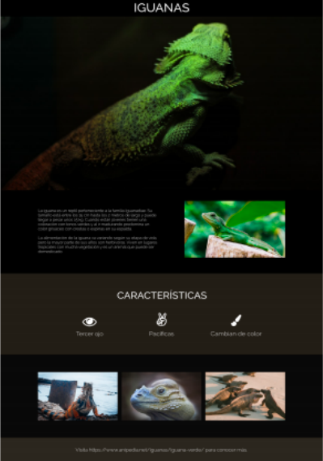
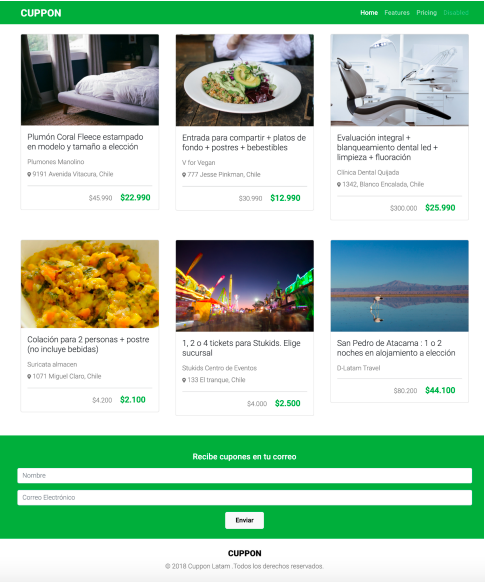

Selección de proyectos desarrollados en HTML, CSS, Bootstrap y diseño web moderno, enfocados en experiencia de usuario, estructura visual y buenas prácticas frontend.

Desarrollo de sitio web moderno, atractivo y enfocado en presentar productos o servicios de forma clara, optimizando la experiencia visual y la captación de clientes.

Iguana Page es una página web estática desarrollada con HTML y CSS, enfocada en presentar información visual y descriptiva sobre las iguanas. El proyecto destaca por su estructura limpia, uso de imágenes, tipografía y secciones organizadas para mejorar la experiencia de lectura. Fue diseñado en formato de escritorio, por lo que actualmente no cuenta con diseño responsivo para dispositivos móviles.

Proyecto desarrollado con HTML5, CSS3 y Bootstrap 5.3, enfocado en la creación de una Landing Page responsiva inspirada en la plataforma Cuppon. El objetivo principal fue practicar el uso de Bootstrap Grid, Cards, Navbar, Formularios responsivos y estilos personalizados, aplicando buenas prácticas de desarrollo frontend.